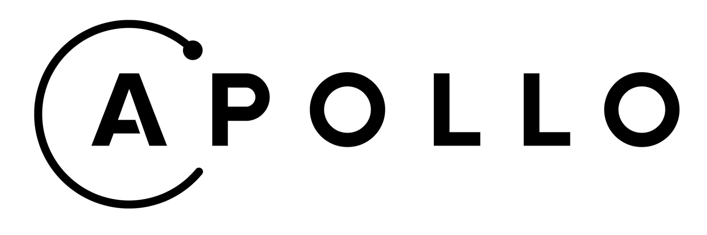
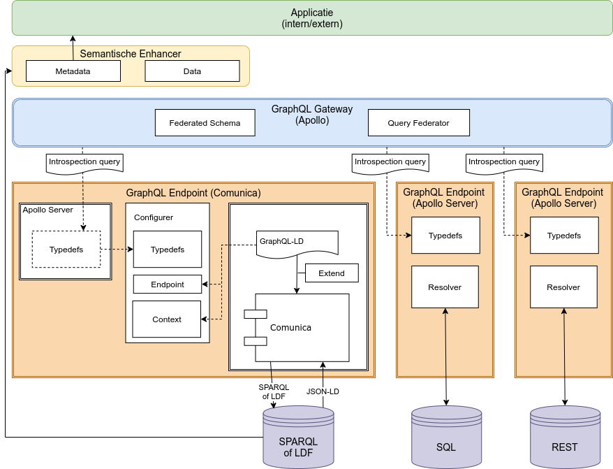
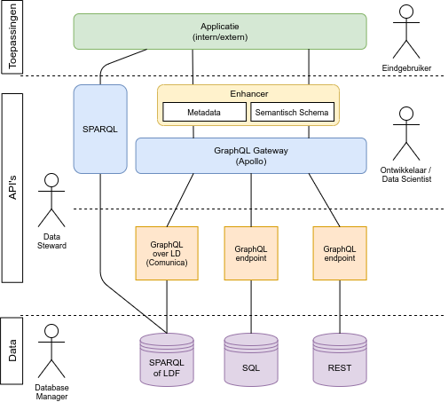

Ontsluiting middels GraphQL
GraphQL is een open-source framework oorspronkelijk ontwerpen door Facebook en tegenwoordig onderhouden door de GraphQL foundation. GraphQL is - vanuit hun eigen woorden - een querytaal voor APIs. Het combineert de gedachte van graafmodellering van je data en laagdrempelige ontsluiting via een developer-friendly API interface.

Voordelen en doel van GraphQL
Met GraphQL ondervangen we een aantal vaak gestelde tekortkomingen van de services die we op onze basisregistraties leveren.
- Levering van data is vraaggestuurd in plaats van aanbodgestuurd. We geven de gebruiker de kans om precies die data te bevragen die hij/zij nodig heeft.
- We maken bevragen op basis van objecten mogelijk.
- Verschillende datasets met een administratieve connectie kunnen integraal bevraagd worden.
Voor ons heeft GraphQL echter twee belangrijke doelen:
- GraphQL is een krachtig paradigme om data integraal en laagdrempelig richting onze afnemers beschikbaar te stelen én
- GraphQL dient als abstractielaag op de bron, om hiermee onze Extract- Transform & Load (ETL) van Linked Data uit te voeren.
In dit document bespreken we nadrukkelijk dit eerste. Voor het tweede punt verwijzen we de geïnteresseerde lezer door naar de sectie over GraphQL in gebruik.
GraphQL op een silo
Verschillende GraphQL endpoints - naar de buitenwereld toe geidentificeerd door hun typedefs en resolvers - bevinden zich op een databron, zijnde (op dit moment) Linked Data, SQL en/of REST. Een GraphQL endpoint is dus back-end agnostisch.
Typedefs
Zoals eerder gesteld modelleren we middels GraphQL onze data als een graaf, met verschillende nodes (objecten) en edges (relaties). Deze modellering vinden we terug in de typedefs van ons GraphQL endpoint. Neem als voorbeeld het object Pand in de BAG. De corresponderende typedefs ziet er als volgt uit:
1 2 3 4 5 6 7 8 9 10 11 12 13 14 15 16 17 18 19 20 21 22 23 24 25 26 27 28 29 30 31 32 33 34 35 36 37 38 39 40 41 42 43 44 45 46 47 48 49 50 51 | |
Kortom, het object (BAG2Pand) kent attributen (bijv. oorspronkelijkBouwjaar), verscheidene vormen van metadatering (zichtbaar in de typedefs) en object-relaties (zoals bevatVerblijfsobjecten) waarmee relaties naar andere objecten worden aangegeven.
Query
Onderdeel van het implementeren van de typedefs is ook het definiëren van de Query varianten die voor deze silo geldt. Een Query definiëert de ingang waarmee de data bevraagd kan worden. Denk bijvoorbeeld aan een (set van) nummeraanduiding(en):
bag2nummeraanduiding(identificatiecode: String @lpad(length: 16, char: "0"), peilDatum: Date, first: Int, offset: Int): [BAG2Nummeraanduiding]
Deze Query (ingang) beschrijft dus dat er een nummeraanduiding opgehaald kan worden voor een gegeven identificatiecode (vergelijkbaar met een standaard REST API) of dat er een set aan objecten opgehaald kan worden (met paginatie parameters first en offset). Middels de zogenoemde directive lpad wordt input van een gebruiker voor identificatiecode automatisch aangevuld tot 16 karakters.
Resolvers
Wanneer de typedefs gedefiniëerd zijn moet het GraphQL endpoint nog weten hoe het de onderliggende data moet ophalen. Dit is terug te vinden in de resolvers. Een voorbeeldje:
BAG2Nummeraanduiding: {
hoofdadresVan(parent, args, ctx, info){
return querydb({ pool: 'bag_pg', ctx: bagsql["bag2verblijfsobject"], id: "hoofdadres = :identificatie", binds: { peildatum: parent.peilDatum, identificatie: parent.identificatiecode }});
},
}
Kortom, de resolvers beschrijven hier dat er een voorgedefiniëerde SQL query (bag2verlijfsobject) moet worden afgevuurd met daarin een aantal bind variabelen (parameters) om van een object met type BAG2Nummeraanduiding het object op te halen dat het hoofdadresVan deze nummeraanduiding is. Middels de pool wordt aangegeven uit welke database de data moet komen.
GraphQL over de silo's heen
Al onze GraphQL endpoints voldoen aan de Apollo GraphQL standaard. Apollo is een open-source framework bovenop GraphQL waarmee voornamelijk federatie gemakkelijker is gemaakt. Wanneer verschillende GraphQL endpoints naar elkaar verwijzen (bijvoorbeeld doordat de onderliggende data relaties naar een andere databron bevat) gebruiken we Apollo om de brug tussen deze silo's te slaan.

Dit betekent dat - governance technisch - data eigenaren verantwoordelijk zijn voor de data in hun eigen silo (en desbetreffende endpoint). Maar ook dat er middels een zogenoemde Apollo Gateway een bevraging kan worden uitgevoerd over deze verschillende silo's heen. Hierbij is het irrelevant waar deze endpoints staan. Voor deze endpoints geldt dus een volledige federated approach. De kracht hiervan is dat Kadaster niet per se een endpoint hoeft te hosten op alle data, maar dat ook externe partijen (zoals bijvoorbeeld CBS of NDW) een eigen endpoint zouden kunnen hosten, welke we dan wel weer integraal kunnen bevragen. Uiteraard wel zolang zij maar aan dezelfde standaarden voldoen. Om de silo's met elkaar te verbinden moeten er in de silo's zogenoemde extends worden aangebracht. Een voorbeeldje:
extend type BGTPand @key (fields: "identificatiebagpnd peilDatum"){
identificatiebagpnd: String @external
peilDatum: Date @external
"""In de BGT is voor het Pand object een relatie tot het afgeleide BAG pand opgenomen. Een BGT pand kan niet bestaan zonder onderliggend BAG pand.
Dit is een verwijzing naar de bijbehorende voorkomens (historie) van het BAG pand. Alleen het actuele voorkomen wordt meegenomen wanneer peilDatum niet leeg is."""
bagpand: [BAG2Pand]
}
Hier wordt dus gesteld dat een BGTPand een relatie heeft met een BAGPand. En dat klopt. Een BGT Pand kan zelfs niet bestaan zonder BAG Pand. De identifier naar het BAG pand is dan ook een attribuut van het BGT Pand Object. Door in een extend aan te geven dat deze administratieve relatie bestaat, en een bijbehorende resolver te implementeren, kunnen beide objecten nu in samenhang worden bevraagd.
GraphQL over Linked Data
Voor onze toepassing geldt dat wij vaak GraphQL toepassen om traditionele data naar Linked Data te transformeren. Er zijn echter ook een scala aan toepassingen te bedenken waarom GraphQL ook een hele waardevolle abstractielaag kan bieden bovenop Linked Data. GraphQL is een breder geadopteerd query mechanisme dan SPARQL (de querytaal van Linked Data, red.) en biedt ook meer mogelijkheden om gemakkelijk door het schema heen te lopen.
Het is dan ook mogelijk om een Linked Data endpoint met een (Apollo) GraphQL endpoint te abstraheren. Voor Linked Data endpoints geldt dat hier een communica implementatie met bijbehorende JSON-LD context (Zie bijvoorbeeld de JSON-LD context van BAG 2.0) bij hoort.
Conclusie
- Een GraphQL endpoint is back-end agnostisch.
- Een GraphQL endpoint wordt gedefiniëerd door zijn typedefs en resolvers.
- GraphQL endpoints kunnen middels het Apollo framework geheel federatief worden opgezet en beheerd.
- Middels een Apollo GraphQL Gateway zijn de federatieve endpoints echter wel op één plek toegankelijk.
- GraphQL kan ook middels Communica dienen als abstractielaag voor een gegeven Linked Data bron.
Een technische architectuur van dit geheel is te vinden in de volgende plaat:

Terwijl we functioneel de volgende overzichtsplaat hanteren:
